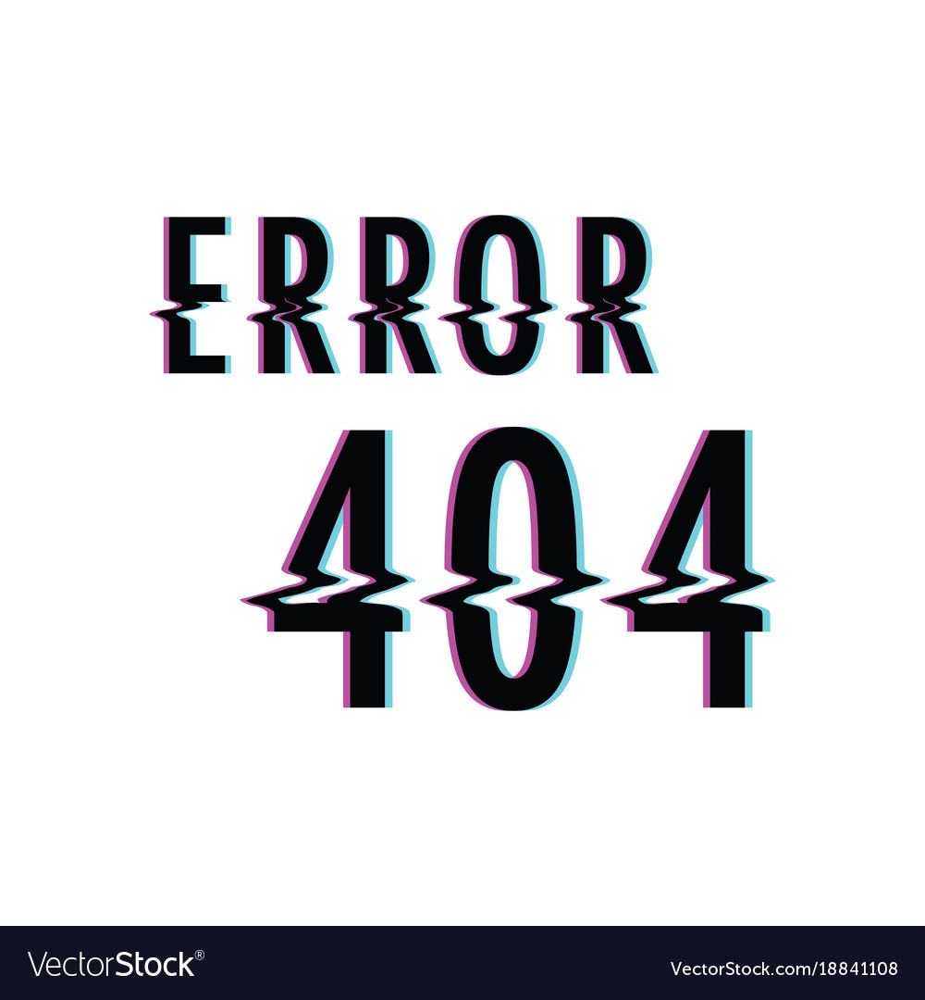

Imazhin qe do e perdorim------Canvasin qe do e mbushim

Browseri juaj nuk e suporton canvas atributin!
Provoje
Sorry, your browser does not support inline SVG.
Sorry, your browser does not support inline SVG.
Oops!
Our server is on a break
We are still working on this!
Go To Homepage